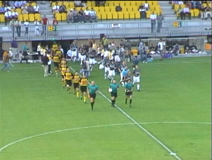
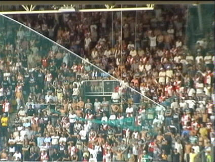

|
Roda JC - Feyenoord (0-2) 22 augustus 2001 |
Aanvankelijk hing er nog een net voor het uitvak.

De "veldbestorming".

Roda is klantvriendelijk, dus dat net mag gerust weg.
Doek uit Stolberg.
Bijzonder moment; Bert en co. zien hem al aankomen.

Een moment van irritatie.
Quizvraag tussendoor: Wie is de eigenaar van dit MM-shirt?
Waarom staat er Fort Lauderdale op en niet Miami Dolphins?
Kalac in Oranje?
Doek voor Garba Lawal.
Hier scoort Etter van Hooijdonck de 0-2 uit een vrije trap.
Onmiddellijk daarna breken er rellen uit.
Foto op verzoek verwijderd.
Foto op verzoek verwijderd.
De rust keert weder.
Het mooie PLS.
©KPD